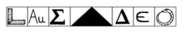

128. BÖLÜM
Bu delilik.
Gözleri bağlı olan Robert Langdon, Escalade ıssız caddelerde güneye doğru hızla ilerlerken hiçbir şey göremiyordu. Yanındaki koltukta oturan Peter Solomon sessizliğini korumakta kararlıydı.
Beni nereye götürüyor?
Langdon ilgi ve endişe karışımı bir merak duyarken, parçaları umutsuzca birleştirmeye çalışan hayal gücü de hızla çalışıyordu. Peter iddiasında kararlıydı. Kayıp Kelime? Merdivenin dibine, üstüne yazı yontulmuş bir taş parçası mı gönülü?... Tüm bunlar ona imkânsız geliyordu.
Taşın üzerine kazındığı iddia edilen yazılar Langdon’ın hafızasındaydı... ama yine de yedi sembol, anlayabildiği kadarıyla bir arada hiçbir şey ifade etmiyorlardı.

Taş ustası gönyesi: Dürüstlük ve doğruluk sembolü.
Au harşeri: Altın elementinin bilimsel kısaltması
Sigma: Yunan alfabesindeki S harfi, tüm parçaların toplamının matematiksel sembolü
Piramit: İnsanın gökyüzüne ulaşmasını anlatan Mısır sembolü.
Delta: Yunan alfabesindeki D harfi, değişimin matematiksel sembolü
Cıva: En eski simya sembolü
Ouroboros: Bütünlük ve bir olma sembolü
Solomon bu yedi sembolün bir “mesaj” olduğu konusunda hâlâ ısrarlıydı. Eğer doğruysa, bu Langdon’ın nasıl okuyacağını hiç bilmediği bir mesajdı.
Escalade aniden yavaşladı ve hızla sağa, garaj yolu ya da giriş yolu gibi daha farklı bir zemine saptı. Yerinde doğrulan Langdon nerede olduklarına dair bir ipucu yakalamak için dikkatle dinledi. Yaklaşık on dakikadır yolculuk yapıyorlardı. Langdon zihniyle takip etmeye çalışsa da yön tayin etme yeteneğini çok çabuk kaybetmişti. Tek bildiği, şu anda Mabet Evi’ne doğru gittikleriydi.
Escalade durunca, Langdon arabanın camının indirildiğini duydu.
Şoför, “Ajan Simkins, CIA,” diye bildirdi. “Sanırım, bizi bekliyordunuz.”
Sert bir asker sesi, “Evet, efendim,” diye karşılık verdi. “Başkan Sato daha önce telefon etmişti. Güvenlik barikatını açana kadar bekleyin.”
Langdon artan bir şaşkınlıkla konuşmaları dinledi, askeri bir üsse girmek üzere olduklarını şimdi anlıyordu. Araba, pürüzsüz bir asfalt üzerinde yeniden hareket edince, Langdon başını Solomon’a doğru çevirdi. “Neredeyiz, Peter?”
“Gözbağını sakın çıkarma!” Peter’ın sesi sertti.
Araç kısa bir mesafe gittikten sonra tekrar yavaşlayarak durdu. Simkins motoru kapattı. Sesler artmıştı. Çoğu askeri komutlardı. Birisi Simkins’ten kimliğini istedi. Ajan arabadan inip, adamlarla alçak sesle konuştu.
Langdon’ın kapısı aniden açıldı ve güçlü eller onun arabadan inmesine yardım etti. Hava çok soğuk ve rüzgârlıydı.
Solomon yanında duruyordu. “Robert, ajan Simkins seni içeri götürecek.”
Langdon kilidin içinde dönen metal anahtar seslerini... sonra da ağır demir bir kapının gıcırtıyla açıldığını duydu. Antik bir bodrum merdiveni kapısının sesine benziyordu. Beni hangi cehenneme götürüyorlar?
Simkins, Langdon’ın metal kapıya doğru ilerlemesini sağladı. Eşikten geçtiler. “Dümdüz ilerleyin, profesör.”
Ortalık birden sessizleşmişti. Ölüm sakinliği. Issız. İçerideki hava steril ve işlem görmüş gibi kokuyordu.
Simkins ve Solomon, Langdon’ı aralarına almış, onu yankı yapan bir koridorda yürütüyorlardı. Mokasen ayakkabılarının altındaki zemin, taş hissi veriyordu.
Metal kapı arkalarından gürültüyle kapanınca, Langdon irkilerek yerinde sıçradı. Kilitler döndü. Gözbağının altında terliyordu. Hemen çıkarıp atmak istedi.
Artık yürümüyorlardı.
Simkins, Langdon’ın kolunu bıraktı ve bir dizi elektronik bip sesinden sonra önlerinde beklenmedik bir gürültü duyuldu. Langdon bunun kayarak açılan otomatik bir güvenlik kapısı olduğunu düşündü.
Simkins, “Bay Solomon, siz ve Bay Langdon buradan sonra yalnız ilerleyeceksiniz. Ben sizi burada bekliyorum,” dedi. “El fenerimi alın.”
Solomon, “Teşekkür ederim,” dedi. “Birazdan döneriz.”
El feneri mi? Langdon’ın kalbi deli gibi atmaya başlamıştı.
Peter, Langdon’ın koluna girip ilerledi. “Benimle yürü, Robert.”
Birlikte, yavaşça başka bir eşikten geçtiler ve güvenlik kapısı arkalarından gürültüyle kapandı.
Peter olduğu yerde durdu. “Bir sorun mu var?”
Langdon aniden kusacak gibi olmuş ve dengesini kaybetmişti. “Sanırım, gözbağını çıkarmam gerekiyor.”
“Henüz değil, neredeyse geldik.”
“Neredeyse nereye geldik?” Langdon, karın boşluğunda artan bir ağırlık hissediyordu.
“Sana söyledim. Seni Kayıp Kelime’ye inen merdiveni görmeye götürüyorum.”
“Peter, bu hiç komik değil!”
“Amaç, komik olması değil. Amaç, zihnini açmak, Robert. Sana, bu dünyada henüz fark etmediğin gizemler olduğunu hatırlatmak. Ve seninle birlikte bir adım daha atmadan önce, benim için bir şey yapmanı istiyorum. Sadece bir anlığına... efsaneye inanmanı istiyorum. Yüzlerce metre aşağıda, insanoğlunun en büyük kayıp hazinelerinden birine inen sarmal merdivenden aşağı bakmak üzere olduğuna inanmanı istiyorum.”
Langdon’ın başı dönüyordu. Sevgili arkadaşına inanmak istiyor, ama inanamıyordu. “Daha yolumuz var mı?” Kadife gözbağı terden sırılsıklam olmuştu.
“Hayır. Sadece birkaç adım daha. Son bir kapıdan geçeceğiz. Şimdi, onu açıyorum.”
Solomon, onu bir anlığına bırakınca, başı dönen Langdon olduğu yerde sallandı. Dengesini bulmak için uzanınca Peter hemen yanına geldi. Ağır otomatik kapı önlerinde gürültüyle açıldı. Peter, Langdon’ın koluna girdi ve yeniden ilerlemeye başladılar.
“Bu taraftan.”
Bir eşikten daha geçtiler ve kapı arkalarından kayarak kapandı.
Sessizlik. Soğuk.
Langdon, bu yerin -her neresi ise- güvenlik kapılarının, diğer tarafındaki dünyayla bir ilgisi olmadığını hissetti. Hava, bir mezar kadar rutubetli ve soğuktu. Akustiği yoktu. Klostrofobi krizinin eşiğinde olduğunu hissetti.
“Birkaç adım daha.” Solomon onu bir köşeden döndürüp, tam durması gereken yere getirdi. Sonunda, “Gözbağını çözebilirsin,” dedi.
Langdon kadife gözbağını hemen çıkardı. Nerede olduğunu anlamak için etrafına bakındı, ama hâlâ hiçbir şey göremiyordu. Gözlerini ovuşturdu. Hiçbir şey göremedi. “Peter, burası zifiri karanlık!”
“Evet, biliyorum. Önüne doğru uzan. Bir parmaklık var. Onu tut.”
Langdon karanlıkta el yordamıyla aranarak, demir parmaklığı buldu.
“Şimdi izle.” Peter’ın bir şey arandığını duyabiliyordu. Aniden el fenerinin keskin ışığı karanlığı deldi. Işık yere doğrultulmuştu, bu yüzden Langdon henüz etrafında neler olduğunu göremeden Solomon el fenerini parmaklığın üzerinden, aşağıya doğrulttu.
Langdon dipsiz bir kuyuya... yeryüzünün derinliklerine inen sonsuz bir sarmal merdivene bakıyordu. Tanrım! Neredeyse dizlerinin bağı çözülmüştü, destek almak için parmaklığa tutundu. Merdiven geleneksel kare spiral şeklindeydi. El fenerinin ışığı dipsiz karanlıkta yok olurken, Langdon yerin altına inen en az otuz basamak görebiliyordu. Dibini göremiyorum bile!
Kekeleyerek, “Peter...” dedi. “Burası neresi!”
“Seni birazdan merdivenin dibine götüreceğim, ama bunu yapmadan önce sana başka bir şey göstermeliyim.”
İtiraz edemeyecek kadar bitkin olan Langdon, Peter’ın kendisini merdiven boşluğundan uzaklaştırıp, tuhaf, küçük bir odadan geçirmesine izin verdi. Peter, el fenerini ayaklarının altındaki aşınmış taş zemine doğru tuttuğundan, Langdon etraşarındaki mekân hakkında fazla bilgi sahibi olamıyordu... tek bildiği küçük bir yer olduğuydu.
Minik bir taş oda.
Odanın karşı duvarına hemen vardılar, içinde dikdörtgen bir cam gömülüydü. Langdon bunun diğer odaya açılan bir pencere olabileceğini düşündü ama durduğu yerden, diğer tarafın karanlığından başka bir şey görünmüyordu.
Peter, “Haydi,” dedi. “Bak.”
“Orada ne var?” Langdon bir anda Kongre Binası’nın altındaki Yansıma Odası’nı ve içinde dev bir yeraltı mağarasına açılan bir kapı olabileceğine inanışını hatırladı.
“Sadece bak, Robert.” Solomon, onu hafifçe ileri doğru itti. “Ve kendine sahip ol, çünkü göreceğin şey seni şok edecek.”
Ne göreceği hakkında hiçbir fikri olmayan Langdon cama doğru ilerledi. Kapıya yaklaşırken, Peter el fenerini söndürünce, küçük oda zifiri karanlığa büründü.
Gözleri karanlığa alışan Langdon önüne doğru uzanıp, elleriyle duvarı, sonra camı buldu ve yüzünü şeffaf kapıya yaklaştırdı.
Arka taraf hâlâ karanlıktı.
Yüzünü cama bastırarak daha da yaklaştı.
Sonra gördü.
Langdon’ın vücuduna yayılan şok ve şaşkınlık dalgası, iyice içine işleyerek midesini altüst etti. Beyni, karşında duran hiç beklenmedik görüntüyü kabullenmeye çalışırken neredeyse arkaüstü düşüyordu. Robert Langdon, camın diğer tarafında duran şeyi en çılgın rüyalarında bile hayal edemezdi.
İnanılmaz bir görüntüydü.
Karanlığın içinde göz kamaştırıcı, beyaz bir ışık, pırıltılar saçan bir mücevher gibi parlıyordu.
Langdon şimdi her şeyi anlıyordu... Giriş yolundaki barikatı... ana girişteki muhafızları... dışarıdaki ağır metal kapıyı... gürültüyle açılıp kapanan otomatik kapıları... midesindeki ağırlığı... kafasındaki sersemliği... ve bu minik taş bölmeyi.
Peter arkasından, “Robert,” diye fısıldadı. “Bazen bakış açısını değiştirmek, ışığı görmeye yeter.”
Dili tutulan Robert pencereden dışarı baktı. Bakışları, gecenin karanlığında gezindi, bir kilometreden uzun boşlukta gidip geldi, sonra aşağıya... daha da aşağıya... karanlığa doğru indi ve muhteşem bir şekilde aydınlatılmış Kongre Binası’nın sade, beyaz kubbesi üzerinde durdu.
Langdon, Kongre Binası’nı daha önce hiç bu açıdan -Amerika’nın muhteşem Mısır dikilitaşının üzerinde, yerden yüz yetmiş metre yüksekte dururken- görmemişti. Bu akşam, hayatında ilk kez, küçük gözlem odasına... Washington Anıtı’nın tepesine çıkmıştı.